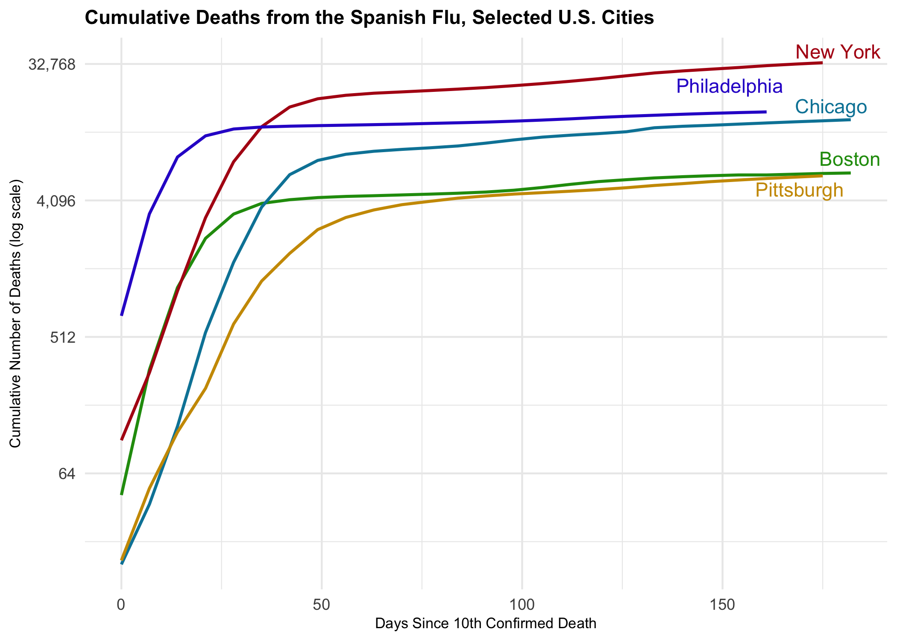

The spanishflu package contains ten datasets covering the Spanish flu in the United States:
- The first two datasets,
naval_forces_in_the_us_deathsandarmy_in_the_us_deaths, can be used to visualize deaths from influenza and pneumonia in the military forces, where the Spanish flu first spread. - The third dataset,
deaths_registered_in_certain_cities, contains weekly death numbers from larger U.S. cities between September 8th 1918 and March 15th 1919. - The fourth, fifth and sixth datasets,
deaths_registered_in_certain_states_1000,deaths_registered_in_certain_cities_1000,deaths_registered_in_nyc_boroughs_1000, contain mortality figures per 1,000 population for U.S. states, cities of 100,000 population or more, and New York City’s five boroughs. - The seventh dataset,
deaths_by_sex_age, breaks down deaths from influenza and pneumonia per 1,000 population for all U.S. states, except Hawaii, by sex and age.
- The eigth, nineth and tenth datasets,
death_estimated_vs_excess_states,death_estimated_vs_excess_cities,death_estimated_vs_excess_nyc_boroughs, are helpful to distinguish “excess” deaths from influenza and pneumonia from “normal” deaths from influenza and pneumonia in U.S. states, larger cities, and New York City’s boroughs.
The sources for the datasets contained in the package come from Alfred W. Crosby’s (2003) book “America’s Forgotten Pandemic”. It provides key context for all the datasets. In addition to Crosby’s data, I also added data on non-pharmaceutical interventions by larger U.S. cities during the 1918 and 1919 outbreak from Howard Markel and colleagues.
Installation
You can install the beta version of spanishflu from GitHub with:
install.packages("devtools") devtools::install_github("markushlang/spanishflu")
Load the data
To look at the tibble that contains the data, do this:
head(deaths_registered_in_certain_cities) #> city state population date deaths first_case mortality_acc_date #> 1 Albany New York 112565 1918-09-14 NA 1918-09-27 1918-10-06 #> 2 Albany New York 112565 1918-09-21 NA 1918-09-27 1918-10-06 #> 3 Albany New York 112565 1918-09-28 NA 1918-09-27 1918-10-06 #> 4 Albany New York 112565 1918-10-05 NA 1918-09-27 1918-10-06 #> 5 Albany New York 112565 1918-10-12 45 1918-09-27 1918-10-06 #> 6 Albany New York 112565 1918-10-19 110 1918-09-27 1918-10-06 #> response_date npi_speed_1918 npi_days_1918 #> 1 1918-10-06 -3 47 #> 2 1918-10-06 -3 47 #> 3 1918-10-06 -3 47 #> 4 1918-10-06 -3 47 #> 5 1918-10-06 -3 47 #> 6 1918-10-06 -3 47
Example
# load packages library(pacman) pacman::p_load("tidyverse","lubridate","ggrepel","paletteer","scales","prismatic") pacman::p_load_gh("markushlang/spanishflu") # prepare cumulative counts flu_curve <- deaths_registered_in_certain_cities %>% select(date,city,deaths) %>% group_by(city) %>% arrange(date) %>% mutate(deaths = ifelse(is.na(deaths),0,deaths)) %>% mutate(cu_deaths = cumsum(deaths)) %>% filter(cu_deaths > 9) %>% mutate(days_elapsed = date - min(date), end_label = ifelse(date == max(date), city, NA)) # create cumulative deaths plot flu_curve %>% filter(city %in% c("New York","Philadelphia","Chicago", "Boston","Pittsburgh")) %>% ggplot(mapping = aes(x = days_elapsed, y = cu_deaths, color = city, label = end_label, group = city)) + geom_line(size = 0.8) + geom_text_repel(nudge_x = 1.1, nudge_y = 0.1, segment.color = NA) + guides(color = FALSE) + scale_color_manual(values = prismatic::clr_darken(paletteer_d("jcolors::default"), 0.2)) + scale_y_continuous(labels = scales::comma_format(accuracy = 1), trans = "log2") + labs(x = "Days Since 10th Confirmed Death", y = "Cumulative Number of Deaths (log scale)", title = "Cumulative Deaths from the Spanish Flu, Selected U.S. Cities") + theme(plot.title = element_text(size = rel(1), face = "bold"), axis.text.y = element_text(size = rel(1)), axis.title.x = element_text(size = rel(0.75)), axis.title.y = element_text(size = rel(0.75)), axis.text.x = element_text(size = rel(1)), legend.text = element_text(size = rel(1)) )

This example draws heavily on a Kieran Healy’s Covid-19 Tracking Blogpost.